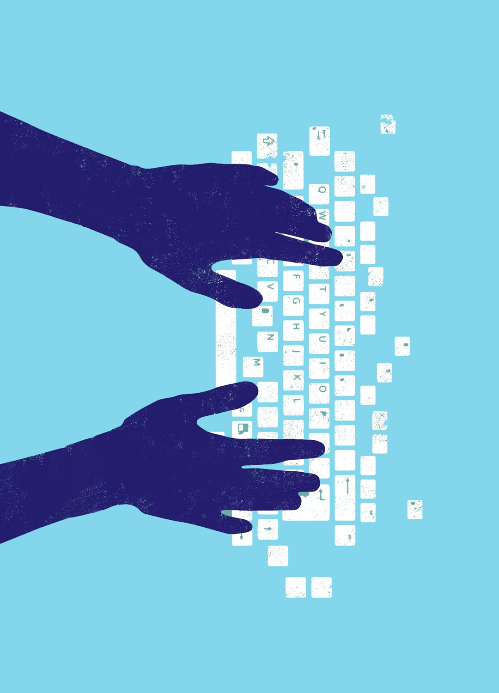

|  |
About MeMohamed Salam Hi, I’m Mohamed. I like to learn and solve problems. I have a Bachelor’s in Information Technology and Informatics from Rutgers The State University of NJ. I am a full stack engineer with 3 years of professional experience in backend and front end development. I have built both monolithic and microservice architecture applications in agile teams using TDD. In the majority of my projects, I utilized github to collaborate with my teammates. |